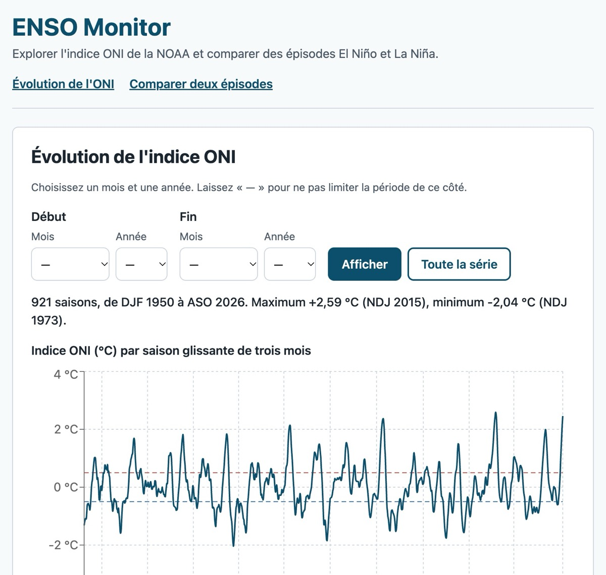

HETIC — WEB3 · SUJET DE RATTRAPAGE
Conception et développement d'une plateforme d'analyse d'El Niño et de La Niña
Dossier de conception
Livrable B — document indépendant du code (livrable A : application et dépôt Git). L'IA générative a été utilisée comme assistant de développement, conformément au sujet (voir section 8).
ENSO Monitor importe la série officielle de l'Oceanic Niño Index (ONI) publiée par la NOAA, la stocke dans PostgreSQL avec sa provenance, l'expose par une API FastAPI versionnée et la présente dans une application React accessible : courbe interactive filtrable par période, et comparaison de deux épisodes historiques accompagnée d'une interprétation prudente et de ses limites.
| Exigence du MVP | Réalisation vérifiable |
|---|---|
| Import NOAA dans PostgreSQL, source identifiée, doublons contrôlés | ETL python -m enso.etl : 921 saisons (DJF 1950 → ASO 2026) ; ré-import = 0 doublon ; chaque import tracé (URL, date, SHA-256, compteurs) |
| API FastAPI documentée, filtrage temporel, validation | GET /api/v1/observations?debut&fin, validation Pydantic (422), OpenAPI sur /api/docs |
| Courbe interactive React/TS et filtre de période | courbe Recharts, filtre par listes mois/année, unité, version et source visibles, tableau équivalent |
| Comparaison de deux épisodes, interprétation prudente | 1997-1998 / 2015-2016 : pics +2,37 / +2,59 °C ; 12 / 17 saisons ≥ +0,5 °C ; règles et 6 limites affichées |
| Trois tests minimaux | transformation (11 tests), API filtrée (7), changement de période côté frontend (6) — 77 tests au total, exécutés en intégration continue |

El Niño et La Niña sont les deux phases de l'oscillation australe (ENSO) : un réchauffement ou un refroidissement anormal de la surface du Pacifique équatorial, aux effets climatiques mondiaux. La NOAA les suit avec l'ONI, moyenne mobile sur trois mois des anomalies de température de surface de la mer dans la région Niño 3.4 (5°N-5°S, 120°-170°O). En novembre 2026, un épisode El Niño fort est en cours (+2,46 °C en ASO 2026) : le sujet est d'actualité, mais les chiffres circulent souvent sans source ni méthode.
Transformer des observations scientifiques réelles en visualisations compréhensibles, sourcées et vérifiables : chaque valeur affichée doit pouvoir être reliée au fichier NOAA dont elle provient, avec la date d'extraction et la version de l'indice.
| Profil | Besoin principal | Conséquence sur la conception |
|---|---|---|
| Étudiant, enseignant, journaliste scientifique | visualiser l'historique, comparer des épisodes célèbres | courbe lisible, épisodes proposés, interprétation en langage clair |
| Lecteur exigeant (vérification) | connaître la source, la version, les règles | source, version, date d'extraction et règles affichées avec chaque résultat |
| Utilisateur de lecteur d'écran ou du clavier | accéder aux mêmes informations sans graphique | résumé textuel, tableau de données, navigation clavier (RGAA / WCAG AA) |
| Exploitant (moi-même) | mettre à jour les données sans risque | ETL ré-exécutable, traçabilité des imports, sauvegardes |
Le sujet autorise l'un ou l'autre. Les deux indices sont aussi fiables : ils reposent sur les mêmes mesures de la NOAA (ERSST v6), mais ne répondent pas à la même question.
| ONI | RONI | |
|---|---|---|
| Question | De combien la région Niño 3.4 est-elle plus chaude que la normale ? | De combien la région Niño 3.4 est-elle plus chaude que le reste de l'océan tropical ? |
| Adapté à | l'analyse historique : le tableau officiel des épisodes de la NOAA depuis 1950 est construit avec lui, les chiffres sont donc vérifiables | la surveillance de l'épisode en cours, sans l'effet du réchauffement de fond ; indice officiel de la NOAA depuis 2026 |
L'application étant un outil d'analyse historique, l'ONI a été retenu. Conséquence : une partie de l'écart entre des épisodes éloignés peut venir du réchauffement de fond ; cette limite est affichée avec chaque comparaison.
L'ONI mesure une seule région du Pacifique : il ne dit rien des impacts (pluies, sécheresses). Il ne retire pas la tendance au réchauffement global, que corrige le RONI (voir ci-dessus). L'application est un outil d'analyse historique ; ces limites sont affichées à l'utilisateur avec chaque comparaison. Enfin, « Super El Niño » n'étant pas une classe scientifique, l'application ne l'emploie pas.
| # | En tant que…, je veux…, afin de… | Priorité | Critères d'acceptation |
|---|---|---|---|
| US1 | visiteur, je veux voir l'évolution de l'ONI, afin de repérer les épisodes | Must | courbe 1950-2026 ; unité, version et source visibles ; seuils ±0,5 °C |
| US2 | visiteur, je veux limiter la courbe à une période, afin d'étudier un épisode | Must | début ≤ fin sinon message ; valeurs et résumé mis à jour (test n°3) |
| US3 | visiteur, je veux comparer deux épisodes, afin de mesurer leurs différences | Must | pic, moyenne, durée au-delà du seuil, règle NOAA, interprétation et limites |
| US4 | utilisateur de lecteur d'écran, je veux les données sans graphique | Must | résumé annoncé, tableau équivalent, navigation clavier, 0 violation axe-core |
| US5 | exploitant, je veux importer la série NOAA sans doublon et tracée | Must | ré-import : 0 insertion ; table imports renseignée ; échec tracé |
| US6 | visiteur, je veux comprendre une erreur | Should | message clair (API injoignable, période invalide, aucune donnée) |
| US7 | visiteur mobile, je veux utiliser l'application sur téléphone | Should | aucun défilement horizontal à 375 px, cibles tactiles ≥ 44 px |
| US8 | visiteur, je veux voir la situation actuelle en un coup d'œil | Could | reportée (extension si le temps le permet) |
| US9 | visiteur, je veux une prévision de l'ONI | Won't | exclue par le sujet |
Parcours de l'exploitant : import mensuel planifié, contrôle de la table imports, sauvegardes (section 7).
Choix UX : une seule page (deux tâches, pas de navigation complexe) ; la requête ne part qu'à la validation du formulaire ; la comparaison la plus parlante (1997-98 / 2015-16) est affichée dès l'ouverture ; couleurs de phase conventionnelles (rouge = chaud, bleu = froid) doublées par le style de trait.
flowchart LR
V(["Visiteur"])
E(["Exploitant"])
C(["Planificateur (cron)"])
N[("NOAA CPC
oni.ascii.txt")]
subgraph S["Système ENSO Monitor"]
direction TB
U1(["Consulter la courbe ONI"])
U2(["Filtrer par période"])
U3(["Consulter le tableau et la source"])
U4(["Comparer deux épisodes"])
U5(["Lire l'interprétation, les règles et les limites"])
U6(["Importer la série ONI"])
U7(["Consulter l'historique des imports"])
U8(["Sauvegarder / restaurer la base"])
end
V --> U1 & U2 & U3 & U4
U4 -. « include » .-> U5
U2 -. « extend » .-> U1
E --> U6 & U7 & U8
C --> U6
U6 --> N
Deux acteurs humains aux droits très différents : le visiteur lit uniquement (routes GET) ; l'exploitant agit sur le serveur (ETL, sauvegardes) et n'a pas d'interface web, ce qui supprime toute surface d'attaque d'administration. Le planificateur déclenche l'import mensuel ; la NOAA est un système externe.
classDiagram
direction LR
class Source {
+id
+nom «unique»
+url
}
class Indice {
+id
+code «unique» : ONI
+unite : °C
+version : ONI v6
}
class Import {
+id
+url_fichier
+date_extraction
+empreinte_sha256
+statut
+compteurs : lues, insérées…
+message_erreur
}
class Observation {
+id
+saison : DJF…NDJ
+annee
+date_periode
+temperature_totale
+anomalie
}
Source --> Indice : publie [1 → 1..*]
Indice --> Import : importé par [1 → 0..*]
Import --> Observation : a écrit [1 → 0..*]
Indice --> Observation : mesure [1 → 0..*]
| Relation | Cardinalité | Justification |
|---|---|---|
| Source → Indice | 1 — 1..* | la NOAA publie plusieurs indices (ONI, RONI) ; ajouter le RONI ne demanderait aucune modification du schéma |
| Indice → Import | 1 — 0..* | l'ETL s'exécute chaque mois : une ligne par exécution conserve l'historique ; 0 avant le premier import |
| Indice → Observation | 1 — 0..* | une valeur par saison ; unicité (indice, date_periode) = contrôle des doublons |
| Import → Observation | 1 — 0..* | provenance : chaque observation pointe vers l'import qui l'a écrite (mis à jour si la NOAA révise la valeur) ; un import en échec n'écrit rien |
sequenceDiagram
autonumber
actor U as Visiteur
participant R as React
participant A as FastAPI
participant C as Application
participant B as PostgreSQL
U->>R: période, « Afficher »
Note over R: début > fin → message
R->>A: GET /observations?debut&fin
A->>A: validation Pydantic
alt entrée invalide
A-->>R: 422 (champ, message)
else valide
A->>C: consulter_serie()
C->>B: SELECT paramétré
B-->>C: lignes (index)
alt aucun import
C-->>A: IndiceIntrouvable
A-->>R: 404
else données
C-->>A: série (domaine)
A-->>R: 200 JSON
end
end
R-->>U: résumé, courbe, tableau
flowchart LR F["React + TS
(navigateur)"] -- "HTTPS /api/v1" --> K["Caddy"] --> API subgraph BE["Backend Python — enso"] direction TB API["api
FastAPI, Pydantic"] --> APP["application"] --> DOM["domaine
règles pures"] APP --> INF["infrastructure
SQLAlchemy"] ETL["etl (worker)"] --> DOM ETL --> INF end INF -- "SQL paramétré" --> PG[("PostgreSQL")] ETL -- "mensuel" --> N[("NOAA")]
| Composant | Responsabilité | Ne fait pas |
|---|---|---|
| Frontend | saisie, affichage, accessibilité ; services/api.ts seul point d'accès réseau | aucun calcul métier |
| api | HTTP : validation, codes, format d'erreur unique, conversion en JSON | SQL, règles climatiques |
| application | orchestration d'un cas d'utilisation | HTTP |
| domaine | règles pures et testables : saisons, plausibilité, règle NOAA, intensité, interprétation | entrées/sorties |
| infrastructure | persistance (modèles, dépôts), conversion vers le domaine | règles, HTTP |
| etl | import planifiable, idempotent et tracé | servir des requêtes |
Flux de données de l'import : téléchargement du fichier texte (httpx, délai 30 s, code HTTP contrôlé) → empreinte SHA-256 → lecture Pandas, conversion (errors="coerce"), rejet des lignes invalides (masque NumPy), suppression des doublons → comparaison avec la base → insertions et mises à jour dans une seule transaction → bilan dans imports. En cas d'erreur : annulation complète, import marqué echoue avec le message.
| Besoin | Solutions envisagées | Choix et avantages | Limites | Vérification |
|---|---|---|---|---|
| Stocker des séries avec intégrité et provenance | SQLite, MongoDB, PostgreSQL | PostgreSQL : contraintes UNIQUE/CHECK/FK qui protègent même si le code a un bug, NUMERIC exact, accès concurrent API + ETL | un serveur à administrer | 5 insertions invalides refusées par la base ; alembic check en CI |
| Importer sans ralentir les utilisateurs | route d'import dans l'API, worker séparé | ETL séparé (E/T/L) : planifiable, code de sortie, la NOAA lente n'affecte pas l'API | un processus de plus | ré-import : 0 doublon ; révision : 1 mise à jour ; échec tracé |
| Faire évoluer l'API sans casser le frontend | routes non versionnées, en-tête de version | préfixe /api/v1 : une v2 pourra coexister | préfixe à maintenir | OpenAPI généré |
| Séparer les responsabilités et tester les règles | MVC, architecture hexagonale complète | 4 couches « légères » : règles pures testées sans base | pas d'interfaces abstraites (choix de simplicité) | tests du domaine sans PostgreSQL |
| Déployer de façon reproductible | installation manuelle, Kubernetes, PaaS | Docker Compose : un fichier versionné, identique en local et en production | un seul serveur | démonstration locale complète (section 7) |
| Rendre le graphique accessible | graphique seul, image avec alt | résumé textuel + tableau + nom + clavier, cohérent avec les couleurs et les traits | Recharts insuffisant seul | axe-core 0 violation ; test du nom ; contrastes mesurés |
| Tracer les données | colonne « source » texte, journal fichier | table imports + référence de l'import sur chaque observation | une jointure de plus | test : URL, empreinte et statut enregistrés |
| sources | |
|---|---|
| id PK | serial |
| nom | varchar(150) UNIQUE |
| url | text |
| description | text NULL |
| indices | |
|---|---|
| id PK | serial |
| code | varchar(20) UNIQUE |
| nom, unite, version | varchar |
| source_id | FK → sources, RESTRICT |
| imports | |
|---|---|
| id PK | serial |
| indice_id | FK → indices, indexé |
| url_fichier | text |
| date_extraction | timestamptz, défaut now() |
| termine_le | timestamptz NULL |
| empreinte_sha256 | varchar(64) |
| statut | CHECK en_cours / reussi / echoue |
| lignes_lues, _inserees, _mises_a_jour, _ignorees | int, CHECK ≥ 0 |
| message_erreur | text NULL |
| observations | |
|---|---|
| id PK | serial |
| indice_id | FK → indices |
| import_id | FK → imports, indexé |
| saison | varchar(3), CHECK 12 saisons |
| annee | smallint, CHECK 1950-2100 |
| date_periode | date (1er jour du mois central) |
| temperature_totale | numeric(5,2) |
| anomalie | numeric(4,2), CHECK −5 à +5 |
| UNIQUE (indice_id, date_periode) : anti-doublon + index du filtrage temporel | |
Figure 7 — Schéma PostgreSQL (migration Alembic 0001, réversible). Toutes les colonnes sont NOT NULL sauf mention ; clés étrangères en ON DELETE RESTRICT.
Intégrité et migrations : contraintes nommées par convention (messages lisibles, migrations prévisibles) ; ON DELETE RESTRICT interdit de supprimer une source ou un import encore référencé (traçabilité) ; les bornes de plausibilité sont des constantes du domaine réutilisées par les CHECK et par l'ETL (référence unique). La migration a été testée dans les deux sens et la CI vérifie qu'elle correspond aux modèles.
Méthode : travaillant seul, je n'ai pas appliqué Scrum (pas d'équipe ni de cérémonies) mais un Kanban personnel inspiré de l'agilité : une issue = une tâche courte avec critères d'acceptation, une colonne par état (à faire, en cours, terminé), des jalons quotidiens servant de mini-itérations et une version livrable à chaque étape. GitHub : plus de 20 issues avec critères d'acceptation, jalons quotidiens (J1-J6), tableau Kanban (GitHub Projects, automatisé), plus de 20 pull requests relues avant fusion, intégration continue (Actions). Git : main (versions), develop (intégration), une branche courte par issue (feature/, fix/, test/, docs/, chore/, ci/), Conventional Commits, fusion par commit de fusion pour conserver la progression. Versions : v0.1.0 (données/ETL), v0.2.0 (API), v0.3.0 (frontend), v1.0.0 (livraison). Saisie du backlog et gestion des PR par script GitHub CLI ; assistance de l'IA détaillée en section 8.
| Jalon | Issues (priorité haute sauf mention) | État |
|---|---|---|
| J1 Mise en place | #1 dépôt et conventions · #2 monorepo, PostgreSQL Docker, route santé | terminé |
| J2 Données et ETL | #3 modèle + migration · #4 ETL ONI · #5 traçabilité · #6 test n°1 | terminé |
| J3 API | #7 observations filtrées · #8 comparaison · #9 erreurs/OpenAPI/CORS (moyenne) · #10 test n°2 | terminé |
| J4 Frontend | #11 initialisation · #12 courbe + filtre · #13 comparaison · #14 accessibilité · #15 test n°3 | terminé |
| J5 Qualité, déploiement, dossier | #16 lint + CI (moyenne) · #17 déploiement · #18 README · #19 dossier · #36 anomalie (bug) | terminé |
| J6 Remise | #20 version v1.0.0, accès au dépôt, ZIP | 22/11 |
Le sujet a été reçu le 26 octobre. Mes deux emplois (journée et soir) et ma vie de famille ne me laissant que peu de disponibilités, j'ai préparé le dépôt puis concentré le développement sur cinq jours.
| Jour | Prévu | Réalisé |
|---|---|---|
| 26/10 → 16/11 | préparation | réception du sujet (26/10), analyse, création du dépôt (3/11) ; disponibilités limitées par mes deux emplois |
| Mar. 17/11 | J1 — mise en place | backlog (20 issues), jalons, tableau, conventions, première PR |
| Mer. 18/11 | J2 — données et ETL | journée perdue (contraintes professionnelles et familiales) ; seulement une relecture du projet en fin de soirée : risque réalisé |
| Jeu. 19/11 | J3 — API | J1 + J2 + J3 : structure, PostgreSQL, modèle, ETL, API, tests n°1 et n°2 — versions v0.1.0 et v0.2.0 |
| Ven. 20/11 | J4 — frontend | J4 (test n°3, accessibilité), anomalie #36, v0.3.0, CI, déploiement, README, début du dossier |
| Sam. 21/11 | J5 — qualité, déploiement, dossier | dossier de conception, relecture, préparation de la soutenance |
| Dim. 22/11 | J6 — remise | v1.0.0, branche par défaut main, accès au dépôt, ZIP, dépôt sur le Drive |
| Risque | Probabilité / impact | Prévention | Ce qui s'est passé |
|---|---|---|---|
| Retard sur le planning | forte / fort | MVP d'abord ; liste de coupes définie à l'avance (CI → Playwright → démo de production) | réalisé : une journée presque perdue → J2 et J3 regroupés le 19/11 ; aucune coupe nécessaire |
| Code produit avec l'IA mal compris | moyenne / critique (soutenance) | règles de simplicité, relecture de chaque PR, fiches d'étude, exercices de modification | maîtrisé : code relu et étudié partie par partie |
| Erreur sur les données (indice, version) | moyenne / fort | vérification à la source, traçabilité | version v5 supposée → v6 vérifiée ; RONI officiel découvert et documenté |
| NOAA indisponible | faible / moyen | tests sur extrait local, échec tracé, données conservées | non survenu ; scénario testé (URL invalide) |
| Perte de données | faible / moyen | sauvegardes + restauration testée | démonstration : 921 → 321 → 921 |
Arbitrages : comparaison par périodes avec épisodes proposés plutôt que détection automatique (extension) ; test frontend n°3 avec Vitest + Testing Library plutôt que Playwright (même exigence couverte, plus rapide) ; Caddy sert directement le frontend (un service de moins) ; pas d'authentification (aucune donnée personnelle, aucune écriture) ; extensions « situation actuelle » et « bandes de phases » reportées après la livraison du MVP. Suivi : tableau Kanban mis à jour à chaque PR, jalons à dates révisées, une version publiée à chaque étape majeure.
| Niveau | Outil | Ce qui est vérifié | Nb |
|---|---|---|---|
| Domaine (unitaire, sans base) | Pytest | test n°1 transformation (doublons, saison/année/anomalie invalides, extrait réel 1997-98) ; classement nouvelles/révisées/inchangées ; seuils, séquences, El Niño 1997 / La Niña 1998, interprétation | 24 |
| Intégration (PostgreSQL de test) | Pytest | ETL complet : traçabilité, ré-import sans doublon, révision, échec sans données partielles | 4 |
| API | Pytest + TestClient | test n°2 période filtrée (12 valeurs attendues), 4 entrées invalides → 422, 404 ; format d'erreur, 500 sans fuite, CORS ; comparaison | 19 |
| Frontend | Vitest + Testing Library | test n°3 changement de période → nouvelles valeurs ; aucune saisie libre ; erreurs ; comparaison ; service API | 13 |
| Accessibilité | axe-core, calcul WCAG | 0 violation ; nom des graphiques ; contraste de toutes les couleurs | 17 |
Principes : base PostgreSQL réelle et dédiée aux tests (comportement des contraintes fidèle) ; téléchargement injecté (tests sans Internet) ; API simulée côté frontend ; tout le jeu (77 tests), le lint, les migrations et le build s'exécutent en intégration continue à chaque pull request. Chaque test sensible a été vérifié en échec avant d'être considéré comme probant (section 8).
Navigation complète au clavier (ordre logique, lien d'évitement, focus visible), lecteur d'écran (résumé aria-live relié à la figure, tableau équivalent, role="alert" pour les erreurs), contrastes mesurés (texte ≥ 6,9:1), courbes distinguées par la couleur et le trait, affichage à 375 px sans défilement horizontal, textes et nombres au format français.
| Menace | Mesure |
|---|---|
| Injection SQL | requêtes paramétrées générées par SQLAlchemy ; aucune concaténation d'entrée utilisateur |
| Entrées malveillantes ou incohérentes | validation Pydantic (types, ordre des dates, paramètres inconnus refusés) avant tout traitement |
| Fuite d'informations | erreur 500 générique, détail uniquement dans les journaux (testé) ; en-tête Server retiré |
| Secrets dans le code | .env hors Git (modèles versionnés sans valeur), mot de passe généré aléatoirement |
| Appels depuis un autre site | CORS limité au frontend déclaré et à GET (testé) |
| XSS, clickjacking, rétrogradation HTTP | React échappe le contenu ; CSP, HSTS, nosniff, frame-ancestors 'none' via Caddy |
| Compromission d'un service | base et API sur un réseau interne sans Internet, aucun port publié sauf Caddy, processus non-root |
| Contrôle d'accès | non requis : aucune administration ni donnée personnelle, aucune route d'écriture exposée |
Mesures locales : série complète (921 valeurs) 94 Ko, 9 Ko compressés (Caddy compresse) ; une année 1,6 Ko en 6 ms ; comparaison 6 Ko en 7 ms. Le filtrage utilise l'index de la contrainte unique. Point faible identifié : JavaScript de 649 Ko (188 Ko compressés), dû au module graphique — piste : chargement différé. Les données changeant une fois par mois, un cache HTTP serait une optimisation simple.
fix/36-contraste-focus → test qui reproduit l'anomalie (calcul du contraste depuis index.css : 2 échecs, commit séparé) → correction #b45309 (5,02:1) → test vert, suite complète verte, contrôle visuel au clavier → PR #37. Le test couvre toutes les couleurs : toute régression future sera détectée.
<input type="month"> n'existe pas dans Safari, qui affichait un champ texte libre ; une saisie naturelle (01/01/1997) provoquait une erreur 422. Même démarche : tests qui échouent, remplacement par des listes mois/année identiques dans tous les navigateurs, tests verts (PR #45). Leçon : vérifier aussi dans un second moteur de navigateur.Autres anomalies corrigées pendant le développement : résumé lu deux fois par les lecteurs d'écran, graphiques focalisables sans nom accessible, libellés superposés, documentation de l'API inaccessible derrière le proxy, numéro de version incohérent avant une publication.
La procédure complète figure dans le dépôt (deploy/README.md). Elle a été exécutée en local (DOMAINE=localhost) : aucune dépense n'a été engagée.
flowchart LR I((Internet)) -- "HTTPS 443
(80 → 308)" --> CA["caddy
HTTPS, en-têtes,
frontend"] subgraph INT["réseau interne"] direction TB API["api
non-root, santé"] --> DB[("db PostgreSQL
aucun port publié")] MIG["migration (1×)"] --> DB end CA -- "/api/*" --> API ETL["etl (cron mensuel)"] --> DB ETL --> N[("NOAA")] DB -. "pg_dump nocturne" .-> S[("sauvegardes
+ copie hors serveur")]
VPS Linux (exemple : Hetzner CX22, UE) : 2 vCPU, 4 Go, 40 Go SSD, Ubuntu 24.04 LTS. PostgreSQL ≈ 300 Mo, API ≈ 150 Mo, Caddy ≈ 30 Mo, construction des images ≈ 1 Go ponctuellement ; données ONI < 1 Mo. Largement suffisant pour plusieurs centaines de requêtes par seconde sur ce volume.
deploy/.env (droits 600, hors Git) : DOMAINE, EMAIL_ACME, identifiants PostgreSQL (mot de passe openssl rand -hex 24) ; l'URL de connexion et les origines CORS sont construites dans compose.yaml. Serveur : utilisateur dédié, SSH par clé uniquement, root désactivé, mises à jour de sécurité automatiques. Docker contournant ufw pour les ports publiés, seul Caddy publie des ports.
x-backend: &backend # image commune api / etl / migration
build: ../backend
environment:
URL_BASE_DE_DONNEES: postgresql+psycopg://${POSTGRES_USER}:…@db:5432/…
api:
<<: *backend
depends_on: { migration: { condition: service_completed_successfully } }
networks: [interne]
networks:
interne: { internal: true } # aucun accès Internet
{$DOMAINE} {
encode zstd gzip
header { Strict-Transport-Security "max-age=31536000" -Server … }
handle /api/* { reverse_proxy api:8000 }
handle { root * /srv ; try_files {path} /index.html ; file_server }
}
| Opération | Commandes / moyen |
|---|---|
| Premier déploiement | git checkout v1.0.0 → cp .env.example .env → docker compose up -d --build → docker compose run --rm etl |
| Tâches planifiées | cron : import le 6 du mois (publication NOAA vers le 5) ; sauvegarder.sh chaque nuit (pg_dump, 14 jours) + copie hors serveur |
| Mise à jour | sauvegarde → git checkout de la nouvelle étiquette → up -d --build (migrations automatiques) |
| Retour arrière | étiquette précédente ; alembic downgrade ou restaurer.sh si le schéma a changé |
| Journaux et supervision | docker compose logs (Caddy en JSON), contrôles de santé, sonde externe sur /api/v1/sante (503 si la base est indisponible), restart: unless-stopped |
| Panne | import échoué → statut et message dans imports, données existantes toujours servies ; données corrompues → restaurer.sh |
Preuves (exécution locale) : migration appliquée au démarrage ; 921 observations importées via Docker ; HTTP → 308 HTTPS ; API, frontend et /api/docs en 200 ; en-têtes HSTS/CSP présents ; accès Internet depuis l'API bloqué ; processus enso non-root ; sauvegarde → suppression de 600 lignes → restauration (921 → 321 → 921).
Limites : un seul serveur (point unique de défaillance, ≈ 30 min de reconstruction) ; quelques secondes d'indisponibilité pendant une restauration. Pistes : base managée ou répliquée, plusieurs instances de l'API, cache HTTP, limitation du débit dans Caddy.
ONI plutôt que RONI (section 1) ; comparaison 1997-1998 / 2015-2016 (deux épisodes complets et très documentés) sur des fenêtres identiques de 18 saisons ; règles dans le domaine et renvoyées avec chaque résultat ; ETL idempotent qui applique les révisions de la NOAA ; accessibilité traitée comme une exigence fonctionnelle ; production minimale mais sûre. Chaque décision est tracée dans le dépôt (issue, pull request, commits).
Résultat principal (comparaison 1997-1998 / 2015-2016, mêmes fenêtres de 18 saisons) : selon l'ONI v6, le pic de 2015-2016 (+2,59 °C, NDJ 2015) dépasse celui de 1997-1998 (+2,37 °C, NDJ 1997) de 0,22 °C, et l'anomalie reste au-dessus de +0,5 °C pendant 17 saisons contre 12 — sans conclusion sur les impacts, ni sur l'effet du réchauffement de fond que le RONI corrigerait.
Outils : Claude (Anthropic) via Claude Code comme assistant de développement — architecture, code, tests, documentation, débogage, explications ; GitHub CLI pour automatiser la saisie du backlog et des pull requests. Parties principalement assistées : backend, ETL, API, frontend, tests, déploiement, documentation. Ma part : cadrage — lecture du sujet, périmètre du MVP, priorités, planning et replanification ; décisions — choix de l'indice, des épisodes, de l'architecture et des conventions après comparaison des options, exigence d'un code simple et homogène ; pilotage — compte GitHub personnel, dépôt et tableau, issues, relecture et fusion de chaque pull request, versions ; vérification — données contrôlées à la source NOAA, application testée comme un utilisateur dans deux navigateurs (anomalie #44 découverte dans Safari), démonstration enregistrée dont la relecture a révélé l'anomalie #46 ; relecture critique du dossier — calendrier réel, justification ONI/RONI, figures et mise en page corrigés à ma demande ; appropriation — étude de chaque partie du code et du métier à l'aide de fiches, pour pouvoir l'expliquer et le modifier. Limites constatées et corrigées : une hypothèse fausse sur la version de l'indice (ERSST.v5) corrigée en comparant les valeurs aux tables officielles ; un test d'accessibilité qui ne pouvait pas échouer, renforcé ; du code simplifié pour rester explicable (fonctions courtes, deux niveaux d'imbrication au plus, un seul modèle de chargement des données). L'IA accélère, mais chaque proposition doit être vérifiée.
Ce projet a été mené seul, en parallèle de deux emplois — à distance en journée, sur site le soir — et de ma vie de famille avec un jeune enfant. La principale difficulté a été d'organiser mon agenda : après avoir créé le dépôt début novembre, j'ai concentré le développement sur cinq jours, dont un a été presque entièrement perdu dès le départ. J'ai appris à m'organiser : découper le sujet en tâches courtes, prioriser l'essentiel, définir à l'avance ce que je supprimerais si nécessaire — aucune coupe n'a finalement été nécessaire — et suivre l'avancement par les issues, les pull requests et les versions. Sur le plan technique, j'ai appris qu'un test qui passe ne prouve rien s'il ne peut pas échouer : j'ai donc vérifié chaque test important en le faisant d'abord échouer. J'ai utilisé l'IA générative, comme le sujet l'autorise, mais c'est en vérifiant la source que la version de l'indice a été corrigée, et en testant l'application comme un utilisateur, dans Safari, que j'ai découvert une anomalie que les tests automatisés n'avaient pas détectée. Si je recommençais, je réserverais du temps chaque semaine dès la réception du sujet et je testerais plus tôt sur plusieurs navigateurs. Ce projet m'a montré le développeur que je veux devenir : quelqu'un qui comprend, vérifie et justifie ce qu'il livre.
Passage au RONI, détection automatique des épisodes, carte de situation actuelle, cache HTTP et chargement différé du graphique, tests de bout en bout avec Playwright.